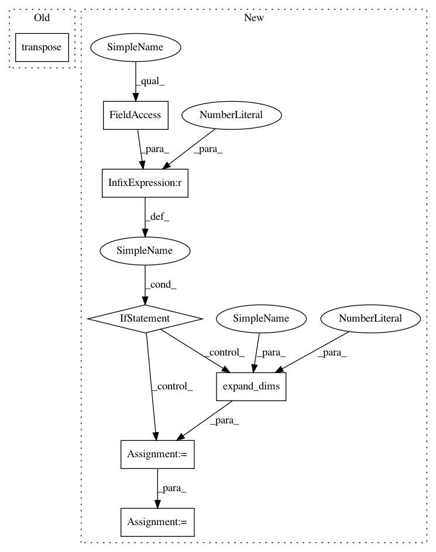

506b234094009d55d326f1ce957f53f15d4b65ee,geomstats/spd_matrices_space.py,,group_exp,#Any#,35
Before Change
[eigenvalues, vectors] = np.linalg.eigh(sym_mat)
diag_exp = np.diag(np.exp(eigenvalues))
exp = np.dot(np.dot(vectors, diag_exp), vectors.transpose())
return(exp)
After Change
all invertible matrices has a straight-forward
computation for symmetric positive definite matrices.
if sym_mat.ndim == 2:
sym_mat = np.expand_dims(sym_mat, axis=0)
assert sym_mat.ndim == 3
n_sym_mats, mat_dim, _ = sym_mat.shape
assert np.all(is_symmetric(sym_mat))
sym_mat = make_symmetric(sym_mat)
In pattern: SUPERPATTERN
Frequency: 3
Non-data size: 7
Instances
Project Name: geomstats/geomstats
Commit Name: 506b234094009d55d326f1ce957f53f15d4b65ee
Time: 2018-02-26
Author: ninamio78@gmail.com
File Name: geomstats/spd_matrices_space.py
Class Name:
Method Name: group_exp
Project Name: geomstats/geomstats
Commit Name: 506b234094009d55d326f1ce957f53f15d4b65ee
Time: 2018-02-26
Author: ninamio78@gmail.com
File Name: geomstats/spd_matrices_space.py
Class Name:
Method Name: group_exp
Project Name: geomstats/geomstats
Commit Name: 506b234094009d55d326f1ce957f53f15d4b65ee
Time: 2018-02-26
Author: ninamio78@gmail.com
File Name: geomstats/spd_matrices_space.py
Class Name:
Method Name: group_log
Project Name: geomstats/geomstats
Commit Name: b0d0053b1f1738640fc99fba642c83af42d10b22
Time: 2018-02-02
Author: ninamio78@gmail.com
File Name: geomstats/invariant_metric.py
Class Name: InvariantMetric
Method Name: inner_product_matrix